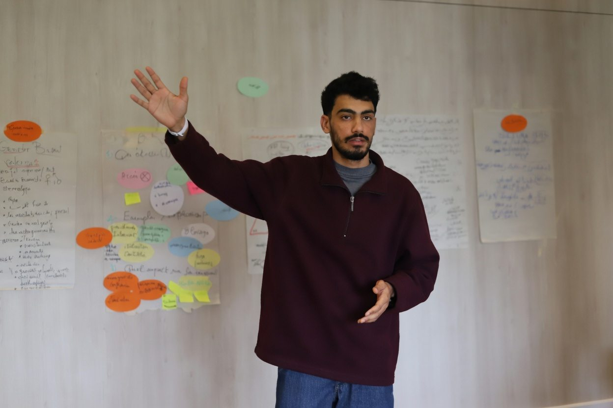

Formateur certifié CNFCPP pour ONG, écoles et programmes jeunesse. Analyse des besoins en amont, sessions actives en arabe, français ou anglais, et un rapport à la fin.

3–4 h · 10–100 participants · présentiel ou en ligne. Analyse des besoins, conception sur mesure, animation et supports, compte-rendu post-session.
4–12 sessions · cohorte · présentiel et distanciel. Architecture du programme, manuels de session, suivi des progrès, rapport d'évaluation final.
2–5 jours · micro-formations · feedback entre pairs. Programme TOT, ateliers pratiques, grille d'évaluation des formateurs, accompagnement à la certification.
Keynote 45–90 min · facilitation d'une demi-journée · modération de panel, avec cadrage du brief et dispositif d'engagement du public.
| Langues | Arabe, français, anglais |
| Thèmes | Éducation non formelle, droits humains, leadership, développement des jeunes, formation de formateurs |
| Interventions | Tunisie, Maroc, Qatar, en ligne |
| Certifications | Formateur certifié national, CNFCPP (2024) · Formateur certifié, Association Youth Clubs (2025) · Formateur certifié Leader Entrepreneur, Pôle Étudiant Entrepreneur de l'Université de Sousse (2025) |
A aussi travaillé avec : USAID / Ma3an, AIESEC, JCI, Junior Enterprises Tunisia, AssociaMed Tunisia, Rotaract, Enactus, CNFCPP.